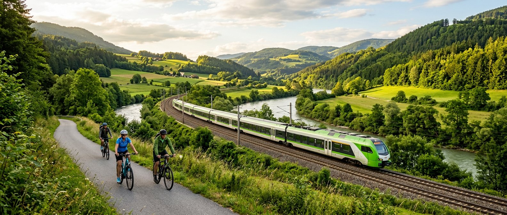
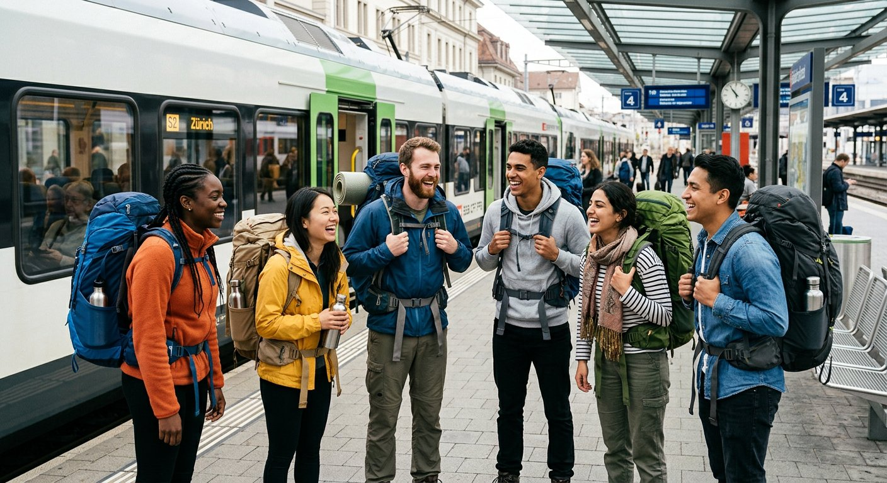
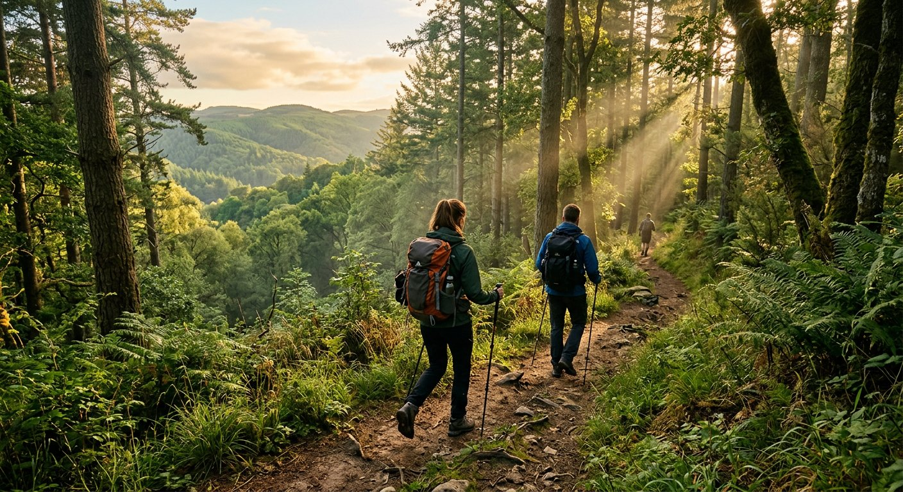
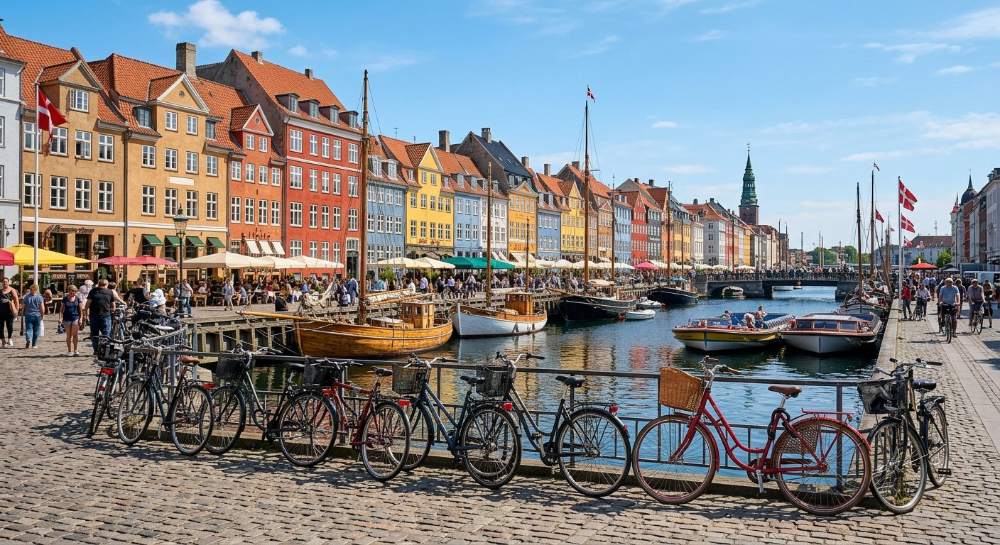
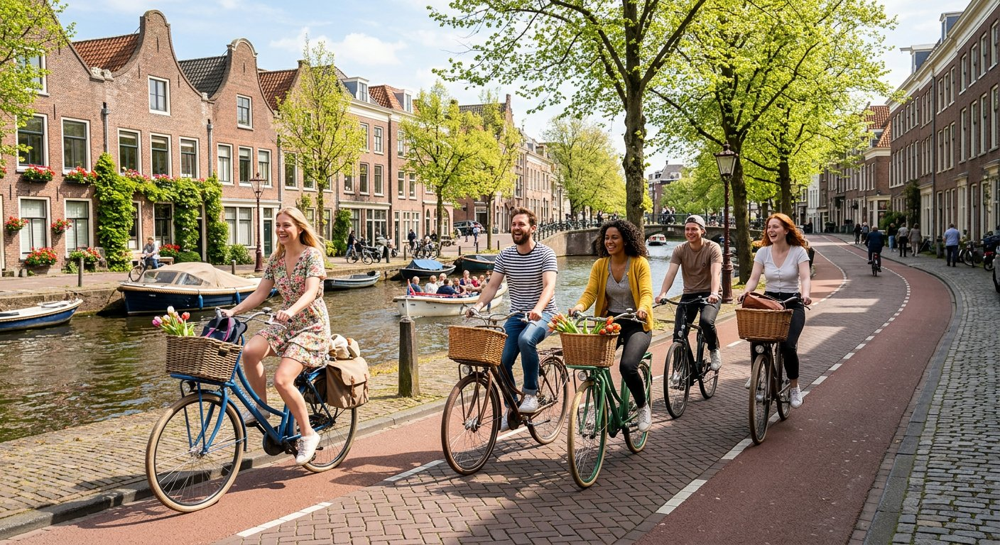

Klima schonen
Eine Zugreise von Düsseldorf nach Amsterdam stößt bis zu 90 % weniger CO₂ aus als ein Flug. Jede Bahnfahrt zählt!

Wir planen unvergessliche Reisen mit dem Zug, dem Fahrrad und zu Fuß. Schonend fürs Klima, erlebnisreich für dich – für junge Erwachsene, Familien, Gruppen und alle, die ohne eigenes Auto unterwegs sein möchten.
Ein Reisebüro mit Haltung – denn Urlaub und Klimaschutz passen zusammen.
GreenRoute Reisen ist ein Reisebüro aus Neuss, das sich auf nachhaltige Städte- und Naturreisen spezialisiert hat. Wir glauben: Reisen ist eines der schönsten Dinge der Welt – und es geht auch, ohne dem Planeten zu schaden.
Deshalb beraten wir unsere Gäste zu Reisen, die ohne eigenes Auto und möglichst klimaschonend funktionieren: mit dem Zug, dem Fernbus, dem Fahrrad oder zu Fuß. Wir kennen die besten Strecken, die schönsten Unterkünfte und die grünsten Aktivitäten in Europa.
Ob Wochenendtrip mit Freunden, Familienurlaub in der Natur oder Gruppenreise mit der Klasse: Wir stellen jede Reise individuell zusammen – inklusive Bahn-Tickets, Fahrradverleih und Tipps vor Ort.

Einfach erklärt: So reisen, dass auch morgen noch andere so reisen können.

Nachhaltig (oder „umweltfreundlich“) ist eine Reise, wenn sie die Umwelt möglichst wenig belastet, die Menschen vor Ort respektiert und auch langfristig machbar ist. Es geht nicht darum, auf Urlaub zu verzichten – sondern darum, klüger zu reisen.
Gut fürs Klima – und gleichzeitig entspannter, günstiger und spannender.
Eine Zugreise von Düsseldorf nach Amsterdam stößt bis zu 90 % weniger CO₂ aus als ein Flug. Jede Bahnfahrt zählt!
Mit Sparpreisen der Bahn, Gruppentickets und dem Deutschland-Ticket wird Reisen ohne Auto oft günstiger als mit dem eigenen Wagen.
Kein Stau, kein Parkplatz-Suchen: Im Zug liest, schläft oder arbeitet man – und kommt erholt am Ziel an.
Bahnhöfe liegen mitten in der Stadt. Man startet direkt ins Zentrum – ohne Umwege über Ringstraßen und Parkhäuser.
Wer regional isst, in Familienhotels übernachtet und lokale Guides bucht, stärkt die Menschen am Urlaubsort.
Rad- und Wandertouren gehören zu jeder GreenRoute-Reise. So wird der Urlaub gleichzeitig gesund und erlebnisreich.
Unsere Gäste lieben diese vier Arten zu reisen – alle ganz ohne eigenes Auto.

Kopenhagen, Amsterdam, Prag: In wenigen Stunden direkt in die schönsten Städte Europas – bequem im Zug.
Zu den ZielenSchwarzwald, Alpen, Ostsee: Nationalparks und Wanderwege entdecken – mit Bus, Bahn und guten Schuhen.
Zu den Zielen
Fahrradfreundliche Städte und Radwege wie den Bodensee-Radweg erkunden – Fahrradmitnahme im Zug inklusive.
Zu den ZielenMit Klasse, Verein oder Familie unterwegs? Wir organisieren Gruppentickets und kinderfreundliche Routen.
Planungs-Tipps